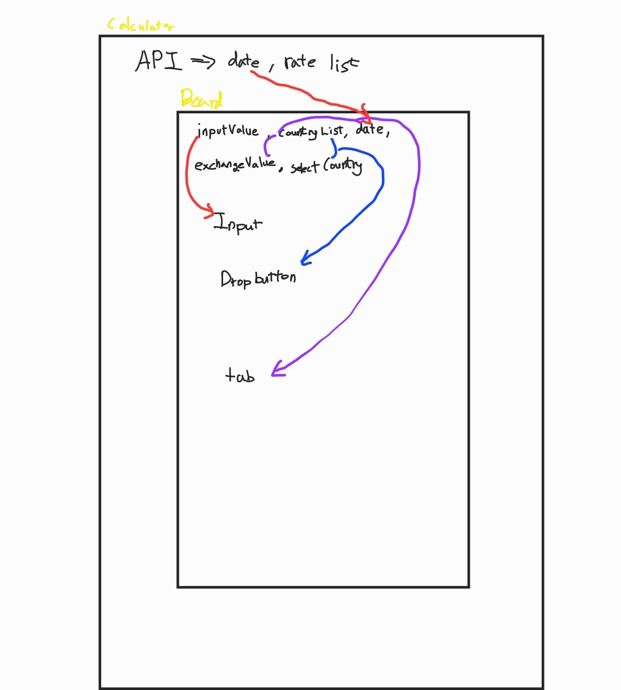
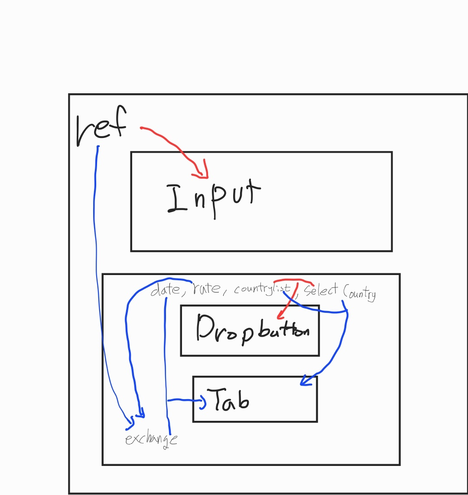
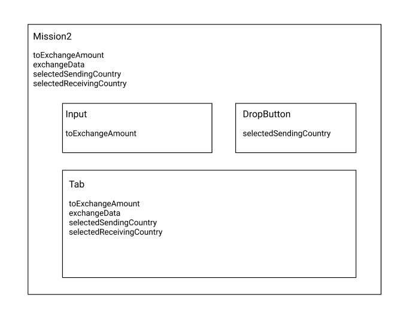

구현 내용
1. 숫자만 입력 가능하고, 4자리 이상 입력 시 세자리씩 구분해주는 콤마(,)가 들어가는 Input 구현
조건에 맞는 Input 타입을 구현하기 위해 세가지 방법을 고민했다.
첫 번째, type=”number” 사용
이 방법은 숫자만 입력하기라는 말을 들었을 때, 떠올랐던 생각이다. 하지만 type값을 주고 숫자만 입력할 수 있었지만 숫자 입력 후에 글자를 작성하면 Input에 포함되는 것을 발견했다. 또한 숫자만 가능하기에 콤마를 넣는다는 건 불가능했다.
두 번째, value와 onChange 사용
숫자만 받기가 어렵다고 생각해서 입력 시 정규식과 콤마를 넣자 라고 생각하니 value와 onChange가 떠올랐다.
입력된다면 해당 value값에 콤마를 제거해도 문자가 없으면 콤마를 추가한 뒤 value를 바꿔준다.
그렇지 않다면 value값을 변경하지 않아 사용자는 글자를 쓰면 입력이 안 되는 경험을 할 수 있다. 하지만 이 방법의 문제는 상위에서 구독하기 위한 state를 내려준다면 자칫 렌더링이 반복적으로 발생할 수 있다는 점이 있다.
세 번째, useRef사용
상위 컴포넌트와 결합 시 리렌더링을 최소화하기 위해 useRef로만 Input의 값이 변경되는 것을 구독하기라는 생각이었지만, Input의 value가 변경돼도 다른 곳에서 current.value값이 변경되지 않기 때문에 적합하지 않았다.
2. 드롭 버튼, 탭 버튼 클릭 시 TabView 변경 구현
드롭버튼과 탭버튼은 아주 긴밀한 사이의 컴포넌트이다. 드롭버튼의 option을 선택하면 탭버튼에 해당하는 것이 사라지고 드롭버튼에 있어야 한다. 그래서 선택된 상태 값이 중요하다고 여겨 두 가지 방법을 생각하게 됐다.
첫 번째, 선택된 국가만 상태 지정
선택한 국가를 기준으로 드롭버튼 지정과 탭에서는 선택되지 않은 국가를 택하는 방법을 생각하게 됐다. 기능구현에는 문제는 없었지만, 환율을 구하려면 Tab버튼이 선택된 국가가 필요하므로 적합하지 않았다.
두 번째, 선택된 송금국가, 수취국가 상태 지정
앞에서 일어난 이슈를 해결하기 위해 sending, receive를 변수명을 추가하여 송금, 수취 국가로 구분 지어 환율 계산 문제를 해결했다.
3. 환율 계산, 날짜 계산
환율 계산을 하기 위해 송금국가, 수취국가의 환율이 필요하다. 정해진 API는 송금국가(USD)로 환율이 고정됐기 때문에 드롭버튼에서 정해진 송금국가가 아니라면 이상한 값을 나타낼 수 있다.
이를 해결하기 위해 수취국가환율 / 송금국가환율값을 리턴하는 함수를 만들어 환율계산을 원활히 했다.
날짜 계산은 API에서 Unix timestamp를 사용하지만 Date객체를 통해 해결하려 했지만 이상한 값이 나오는 현상을 발견했다. 이를 해결하려면 API의 시간 * 1000라는 수식을 통해 반환된 값을 Date객체를 통해 원하는 날짜를 뽑으면 된다.
컴포넌트 구조 잡기

1번 대안
Input값을 바꿀 때, 버튼이 클릭 시 동기적으로 Tab의 내용이 바뀌어야 한다고 생각했다. Input값이 변할 때마다 API요청과 응답이 계속 이루어진다면 응답시간 때문에 사용자는 불편할 것으로 생각했다.
아니면 디바운스 처리해서 매번 응답 받지 않고 Input값을 모두 작성했을 때 응답받는 것도 생각했지만, 동기적으로 바뀌어야 하는 부분에서 사용자에게 느린 경험을 제공할 것 같았다.
그래서 생각한 방법은 그림과 같이 처음에 렌더링할 때 조금 시간이 걸리더라도 Input값 변경, 버튼 클릭 시 동기적으로 받는 방법을 생각했다.

2번 대안
1번 대안과 다르게 Input값은 변경 시 API요청없이, 버튼 클릭 시 API 요청을 구조이다.
이렇게 생각할 수 있었던 이유는 Input의 value값이 변경돼도 value값을 useRef로 구독할 수 있을것 이라 확신했기 때문이다.
그렇게 된다면 Input값이 변해도 props로 내려준 Input값은 드랍버튼과 Tab버튼을 가지고 있는 컴포넌트(Board)에서 사용가능하고 동기적으로 변동된다.

3번 대안
이번 대안은 1번대안에서 팀원과 함께 depth를 줄이기 위해 생각하고 현재 사용하고 있는 구조이다.
useEffect의 deps부분에 버튼을 가리키고 있는 상태를 넣어 버튼 클릭시에만 API호출을 하도록 했다.